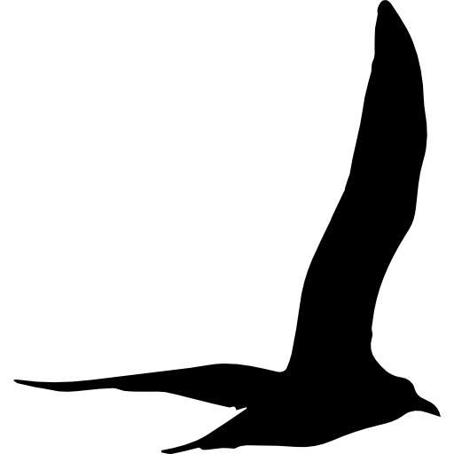

Visualizing the Data.
Because the data had no specific meaning attached, I didn’t started without any particular idea in mind. I only set out with the goal of having no lines between vertices intersect. I was familiar with adjacency matrices thanks to Probability theory and the graphs we draw for Markov Chains. As I drew the different lines and vertices, I looked for possible “fun” shapes that I could decorate.
Creating the Visualization.
I wound up with an upside down triangle and I immediately thought that if I inverted it, the form would look like a mountain. As a big fan of geometric art, I knew exactly where I wanted to go with the idea. I redrew the graph and with a serious amount of sketching, coloring in, and googling, I was able to create my adjacency matrix graph. TA DA!!